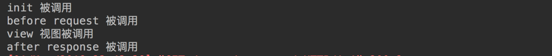

中间件
Django中的中间件是一个轻量级、底层的插件系统，可以介入Django的请求和响应处理过程，修改Django的输入或输出。中间件的设计为开发者提供了一种无侵入式的开发方式，增强了Django框架的健壮性。
我们可以使用中间件，在Django处理视图的不同阶段对输入或输出进行干预。
1 中间件的定义方法
定义一个中间件工厂函数，然后返回一个可以被调用的中间件。
中间件工厂函数需要接收一个可以调用的get_response对象。
返回的中间件也是一个可以被调用的对象，并且像视图一样需要接收一个request对象参数，返回一个response对象。
def simple_middleware(get_response):
# 此处编写的代码仅在Django第一次配置和初始化的时候执行一次。
def middleware(request):
# 此处编写的代码会在每个请求处理视图前被调用。
response = get_response(request)
# 此处编写的代码会在每个请求处理视图之后被调用。
return response
return middleware
例如，在book应用中新建一个middleware.py文件，
def my_middleware(get_response):
print('init 被调用')
def middleware(request):
print('before request 被调用')
response = get_response(request)
print('after response 被调用')
return response
return middleware
定义好中间件后，需要在settings.py 文件中添加注册中间件
MIDDLEWARE = [
'django.middleware.security.SecurityMiddleware',
'django.contrib.sessions.middleware.SessionMiddleware',
'django.middleware.common.CommonMiddleware',
# 'django.middleware.csrf.CsrfViewMiddleware',
'django.contrib.auth.middleware.AuthenticationMiddleware',
'django.contrib.messages.middleware.MessageMiddleware',
'django.middleware.clickjacking.XFrameOptionsMiddleware',
'book.middleware.my_middleware', # 添加中间件
]
定义一个视图进行测试
def middleware(request):
print('view 视图被调用')
return HttpResponse('OK')
执行结果

注意：Django运行在调试模式下，中间件init部分有可能被调用两次。
2 多个中间件的执行顺序
- 在请求视图被处理前，中间件由上至下依次执行
- 在请求视图被处理后，中间件由下至上依次执行
示例：
定义两个中间件
def my_middleware(get_response):
print('init 被调用')
def middleware(request):
print('before request 被调用')
response = get_response(request)
print('after response 被调用')
return response
return middleware
def my_middleware2(get_response):
print('init2 被调用')
def middleware(request):
print('before request 2 被调用')
response = get_response(request)
print('after response 2 被调用')
return response
return middleware
注册添加两个中间件
MIDDLEWARE = [
'django.middleware.security.SecurityMiddleware',
'django.contrib.sessions.middleware.SessionMiddleware',
'django.middleware.common.CommonMiddleware',
# 'django.middleware.csrf.CsrfViewMiddleware',
'django.contrib.auth.middleware.AuthenticationMiddleware',
'django.contrib.messages.middleware.MessageMiddleware',
'django.middleware.clickjacking.XFrameOptionsMiddleware',
'users.middleware.my_middleware', # 添加
'users.middleware.my_middleware2', # 添加
]
执行结果
init2 被调用
init 被调用
before request 被调用
before request 2 被调用
view 视图被调用
after response 2 被调用
after response 被调用